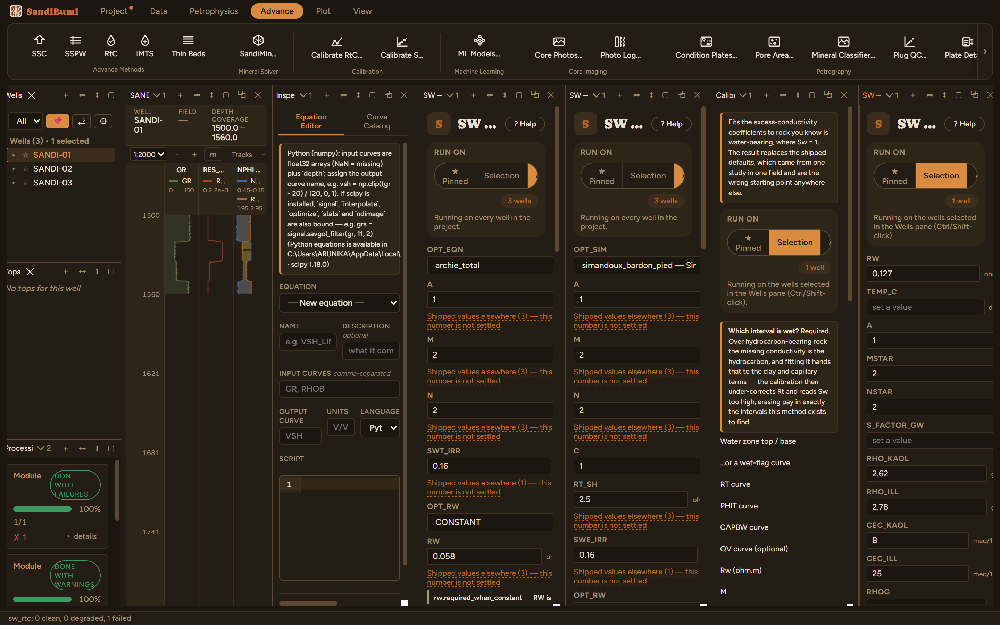

SW — IMTS (Mineral-Textural Scaling)
Waxman-Smits-family conductivity with the clay charge built from mineral volumes: Qv comes from kaolinite and illite volumes with literature CEC constants, is scaled to laboratory CEC by the S factor, referenced to the active water through Swirr, and the conductivity equation is iterated to a stable total saturation. The mineral-textural scaling is SandiBumi's own extension of the published model.
Qv_bulk = (V_kaol·ρ_kaol·CEC_kaol + V_ill·ρ_ill·CEC_ill) / (RHOG·(1−PHIT)) Qv_eff = S · Qv_bulk / (1 − Swirr) Ct = SwT^N*/F* · (Cw + B·Qv_eff/SwT), F* = A/PHIT^M* B = Juhász B(T, Rw); iterate until SwT is stable; SWE from CBW
References
- Waxman, M.H. & Smits, L.J.M. (1968), SPEJ
- Waxman, M.H. & Thomas, E.C. (1974), SPEJ
- Juhász, I. (1979), SPWLA 20th Annual Logging Symposium, Paper AA; and (1981), SPWLA 22nd
The S factor ships absent and is fitted to laboratory CEC with Calibrate S; it is a property of the rock and of the clay curves it was fitted against.
Step by step: IMTS, and the two things it refuses to guess
IMTS is Waxman-Smits-family conductivity with the clay charge built from mineral volumes: kaolinite and illite volumes carry literature CEC constants, the resulting Qv is scaled to laboratory CEC by the S factor, referenced to the active water through Swirr, and the conductivity equation is iterated until the total saturation is stable. The mineral-textural scaling is SandiBumi's own extension of the published model.
What could be filled from a source, was
- RW 0.127 ohm·m: the water-zone Rwa on PHIT_SSC, from the RtC calibration chapter.
- A 1 · M* 2 · N* 2: the dossier's reference-case convention, declared as such.
- CEC_KAOL 8 · CEC_ILL 25 meq/100g: the literature constants the module's own documentation records (of dry rock, grain-weight basis).
- RHOG 2.65: the quartz grain density from SandiMin's endpoint library.
- Inputs: PHIT_SSC, CBW and SWIRR_T resolve straight from the SSC run; the kaolinite slot resolves VDCL. This chain is the point: SSC's bound-water split is what IMTS references its clay charge against.

The refusal ladder, and why it is right
Run it like this and the pane refuses, in order:
- "TEMP_C must be set — Formation temperature". The Juhász B coefficient is a function of temperature, and this delivery records no BHT anywhere: no LAS header entry, no test data. There is nothing to fill it from, so the run stops. On a real dataset this comes from the header or from the formation-temperature module's fitted trend.
- Declare a temperature and the next rung fires: "S_FACTOR_GW must be set — CEC scaling factor S (lab/XRD), grain-weight basis". S is the ratio of measured laboratory CEC to the XRD-theoretical CEC, so it is a property of the rock and of the clay curves it was fitted against. This delivery carries no lab CEC measurements, so S cannot be fitted. The module will not invent it, because S multiplies the whole clay-charge term and moves the saturation with no outward sign of being wrong.
The path forward on a real study: import the lab CEC table, then Advance ▸ Calibrate S… regresses S from those measurements against the very clay curves this run will use. With S fitted and a temperature declared, the run proceeds and writes SWT_IMTS, SWE_IMTS and the effective Qv curve for QC.
A method whose missing inputs produce refusals that name the fix is doing its job: the alternative, a plausible saturation computed from an invented S, is the single most expensive failure mode in this work.
What the application enforces
Everything below is generated from the same manifest the application builds this module’s pane from — descriptions, defaults, sources, ranges and pre-run checks here are exactly what the running application enforces.
LRLC IMTS model: Waxman-Smits-family conductivity with the clay charge referenced to the ACTIVE water — Qv_eff = Qv_bulk/(1−Swirr), where Qv_bulk is the clay MASS per unit dry-rock mass times literature CEC constants (kaolinite 8 / illite 25 meq/100g of DRY ROCK), i.e. (V_kaol*RHO_KAOL*CEC_KAOL + V_ill*RHO_ILL*CEC_ILL)/(RHOG*(1-PHIT)) - the clay's own grain density is what converts its volume to the mass the charge sits on. Calibrated to lab CEC by scaling factor S. Iterates Ct = SwT^N*/F*·(Cw + B·Qv_eff/SwT) with F* = A/PHIT^M* and Juhasz B(T, Rw) until SwT is stable. SWE from CBW. VKAOL/VILL resolve from the selected clay curves. S = measured lab CEC / XRD-theoretical CEC, so it is A PROPERTY OF THE ROCK AND OF THE CLAY CURVES IT IS PAIRED WITH and ships absent. S multiplies the whole clay-charge term, so getting it wrong scales Qv_eff directly and moves Sw with no outward sign. Fit your own with Advance ▸ Calibrate S…, which regresses S from lab CEC measurements against the clay content of the very curves this run will use. S is on the GRAIN-WEIGHT basis and is NAMED S_FACTOR_GW for that reason (DEC-094): a value fitted under the older bulk-volume denominator reads roughly a fifth high at ordinary porosity.
Input curves
| Role | Description | Resolves to | Required | Notes |
|---|---|---|---|---|
| RT | Deep resistivity | RES_DEEP | yes | — |
| PHIT | Total porosity | PHIT_SSC | yes | — |
| VKAOL | Kaolinite volume fraction | VDCL | no | — |
| VILL | Illite volume fraction | VILL | no | — |
| SWIRR | Irreducible Sw (for Qv_eff) | SWIRR_T | no | — |
| CBW | Clay-bound water (for SWE), optional | CBW | no | — |
| PHIT_SSPW | Total porosity — SSPW fallback (used where PHIT is absent) | PHIT_SSPW | no | — |
| CBW_SSPW | Clay-bound water — SSPW fallback | CBW_SSPW | no | — |
Parameters
Whole-well defaults; per-zone values from the Zones pane take precedence inside their zones (except where a parameter is marked one-value-per-well).
RW (ohm.m)
Formation water resistivity at FT
- No shipped default. You supply this value, and a run entering it explicitly must also cite the source that covers it.
- Accepted range: 0.001 to 100 ohm.m
TEMP_C (degC)
Formation temperature
- No shipped default. You supply this value, and a run entering it explicitly must also cite the source that covers it.
- Accepted range: 15 to 200 degC
A
Tortuosity factor a
- No shipped default. You supply this value, and a run entering it explicitly must also cite the source that covers it.
- Accepted range: 0.5 to 3
MSTAR
Shaly-sand cementation exponent m*
- No shipped default. You supply this value, and a run entering it explicitly must also cite the source that covers it.
- Accepted range: 1 to 4
NSTAR
Shaly-sand saturation exponent n*
- No shipped default. You supply this value, and a run entering it explicitly must also cite the source that covers it.
- Accepted range: 1 to 4
S_FACTOR_GW
CEC scaling factor S (lab/XRD), grain-weight basis
- No shipped default. You supply this value, and a run entering it explicitly must also cite the source that covers it.
- Accepted range: 0.01 to 2
RHO_KAOL (g/cc)
Kaolinite grain density
- Default: 2.62
- Accepted range: 1 to 4 g/cc
RHO_ILL (g/cc)
Illite grain density
- Default: 2.78
- Accepted range: 1 to 4 g/cc
CEC_KAOL (meq/100g)
Kaolinite CEC constant
- No shipped default. You supply this value, and a run entering it explicitly must also cite the source that covers it.
- Accepted range: 0 to 50 meq/100g
CEC_ILL (meq/100g)
Illite CEC constant
- No shipped default. You supply this value, and a run entering it explicitly must also cite the source that covers it.
- Accepted range: 0 to 100 meq/100g
RHOG (g/cc)
Grain density
- No shipped default. You supply this value, and a run entering it explicitly must also cite the source that covers it.
- Accepted range: 2 to 3.2 g/cc
SWIRR_DEF (v/v)
Swirr fallback when no SWIRR log
- No shipped default. You supply this value, and a run entering it explicitly must also cite the source that covers it.
- Accepted range: 0 to 0.95 v/v
Output curves
| Name | Description |
|---|---|
| SWT_IMTS | SWT from IMTS (unlimited) |
| SWE_IMTS | SWE from IMTS (unlimited) |
| SWT | Limited total water saturation |
| SWE | Limited effective water saturation |
| VOL_UWAT | Volume of water (unflushed) |
| SW_METHOD | Producing saturation equation (categorical method code) |
| QVEFF | Effective Qv (meq/cm3) |